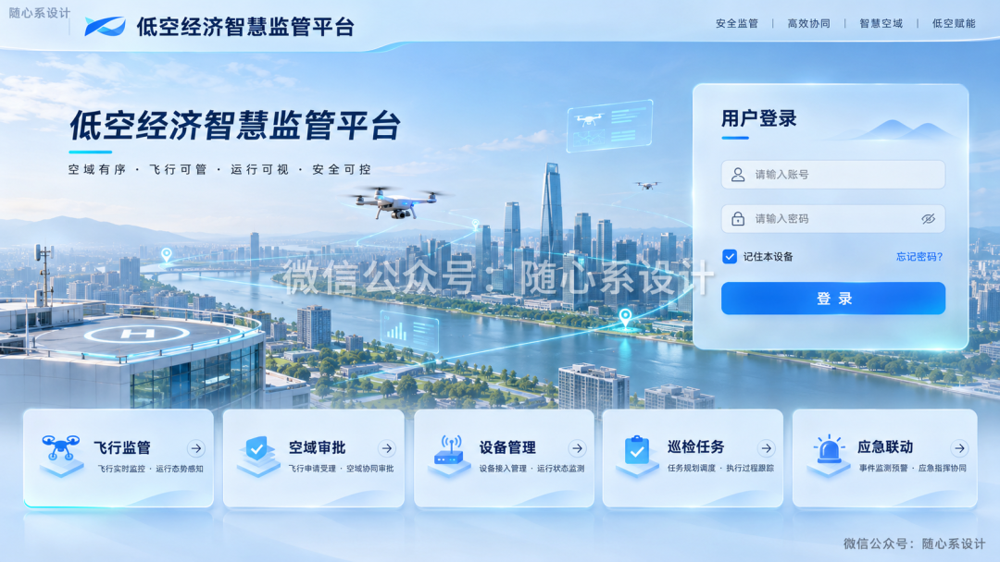
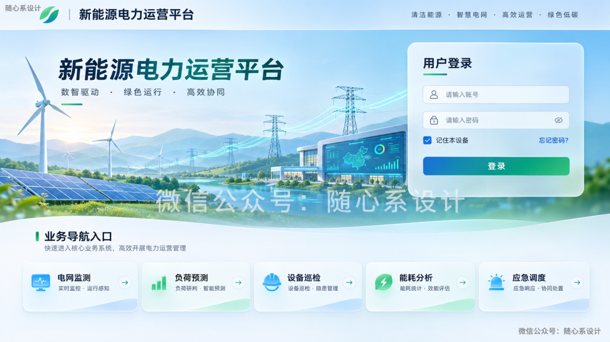
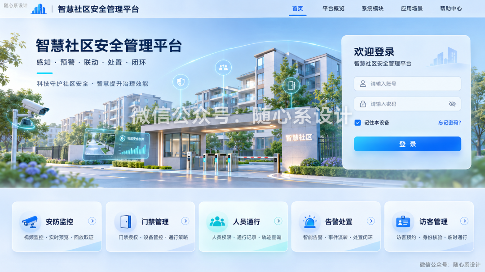
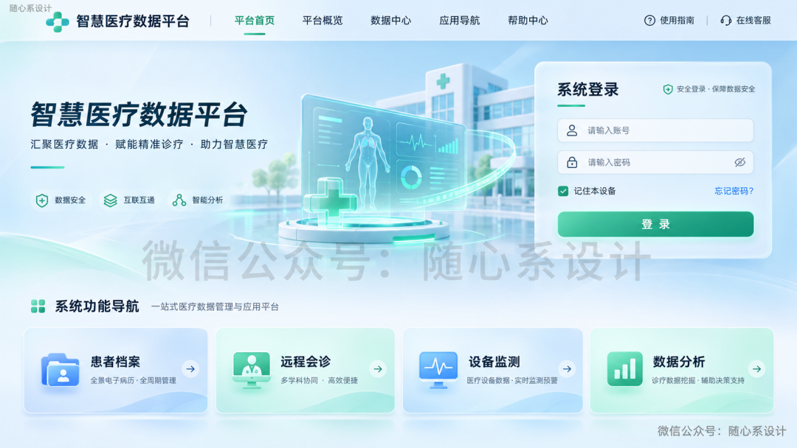
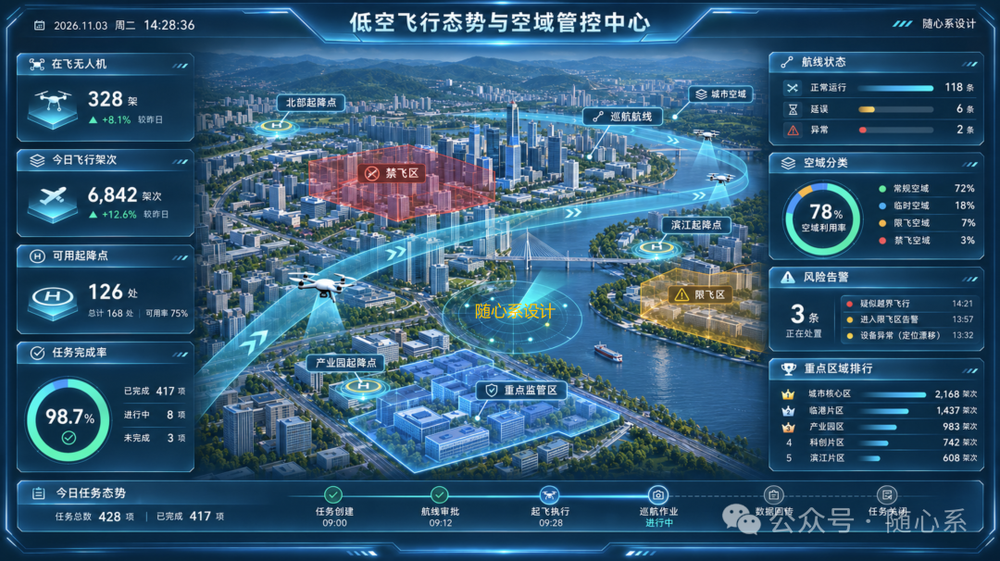

【B端】系统登录导航入口也能做出高级感？
一组涵盖智慧医疗、智慧社区、智能物流、新能源电力等行业的 B 端登录导航设计。以入口式布局与「简约、通透、轻科技」的视觉，重新思考系统第一屏的秩序感。
设计作品仅供学习交流，设计灵感不可作为商用，版权归原作者所有。以下为原文摘录，完整内容与更多作品请见文末原文链接。
01 / 入口式布局：进入即理解
今天分享一组不同行业的 B 端系统登录导航设计，涵盖智慧医疗、智慧社区、智能物流、新能源电力等方向。
首先在布局上，采用了比较清晰的入口式结构：顶部放品牌与基础操作，中间放核心视觉或行业场景，周边搭配模块化入口卡片。让用户进入系统后能快速理解平台定位，并迅速找到自己要进入的功能模块——这样既有展示感，也有实用性。


02 / 视觉风格：简约、通透、轻科技
其次在视觉风格上，这套设计统一控制在简约、通透、轻科技的方向。颜色上多以蓝白、青绿、浅灰等为主，通过柔和发光、玻璃质感、轻阴影和卡片分层来体现科技感，避免过重、过暗、过复杂的「老式大屏味」。
这样做的好处是页面更耐看，也更适合现在很多 B 端产品的审美趋势。


03 / 行业差异：统一框架下的表达
再往下看，不同行业虽然场景不同，比如低空经济、气象、水利、茶园、医疗、电力，但在设计逻辑上是一致的：统一框架 + 行业差异化视觉表达。
也就是说，底层是同一套导航入口设计方法，上层再根据行业属性去替换主视觉、图标、配色和场景元素。这样既能保证系统化，也方便后期快速复用和扩展。

04 / 结语：少一点堆砌，多一点秩序
整体来说，这套设计想传递的是一种更适合当下 B 端产品的方向：少一点堆砌，多一点秩序；少一点复杂，多一点效率；少一点生硬，多一点高级感。
这组效果图主要用于设计灵感与前期构思分享，具体项目还需要结合实际业务需求落地。
「 统一框架 + 行业差异化视觉表达，是这套登录导航可复用的关键。 」
— 原文要点摘录